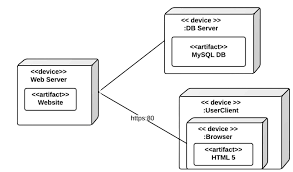

�hendatud modelleerimiskeel (UML) on diagramm m�rkmete keele s�steem, mis v�imaldab visualiseerida s�steeme ja tarkvara. See on �ks populaarsemaid diagrammide tegemise vorme tarkvaraarenduses ning sai ISO standardiks 1997. aastal. Sellest ajast alates on olnud uuendusi, v�imalus lisada ekstra t��pi UML diagramme ja toetada uusi tehnoloogiaid programmeerimises.
Diagrammid on tekstist lihtsamad ja kiiremini m�istetavad, seega on need s�steemide dokumenteerimiseks sobivamad kui kommentaarid. Need aitavad teid ja teie ettev�tet mitmes olukorras, n�iteks kui te:
Muidugi, kui soovite midagi uut arendada, leiate oma UML diagrammidest palju probleeme juba enne nende arendamist v�i kvaliteedikontrolli, mis v�ivad muutuda arenduse v�i kvaliteedikontrolli k�igus takistusteks.
On kaks peamist kategooriat ja 14 erinevat t��pi UML diagrammi, mida kasutatakse erinevates olukordades:
On m�ned UML diagrammid, mida kasutatakse enamikes tarkvaraarenduse v�i s�steemide modelleerimise olukordades, sealhulgas IT-infrastruktuuri ja �rirakenduste puhul. Kolm peamist UML diagrammi, millega peaksite mugavaks saama, h�lmavad kasutusjuhtude diagramme, klassidiagramme ja jadadiagramme.
Kasutusjuhtude diagrammid luuakse s�steemi v�i programmi n�uete anal��simisel. Need kujutavad endast funktsioone v�i omadusi, osalejaid ja nende omavahelisi suhteid.
Objektorienteeritud programmeerimiskeeled p�hinevad klassidel ja nende vahelistel suhetel. UML klassidiagrammi m�rkmete arendati nende programme visuaalselt esindama. Klassid sisaldavad oma atribuute (nende andmed) ja k�itumist (liikme funktsioonid) ning on omavahel seotud mitmesuguste �hendajatega.
Tegevusdiagrammid kujutavad kasutajate ja s�steemide k�itumist protsessi j�rgides. Need on t��pi voogude kaart v�i t��voog, kuid kasutavad pisut erinevaid kujundeid.

Seisundiagramme on programmeerimises kasutatud aastak�mneid s�steemi erinevate olekute kirjeldamiseks. Need pole piiratud ainult programmeerimisega - igal s�steemil ja protsessil on olekud. Need diagrammid on tegevus- v�i jadadiagrammidest kiiremad luua, kuid n�itavad v�hem teavet.
Seisundiagrammid n�itavad, millised olekud viivad �ksteiseni ja mis p�hjustab oleku muutumist.
Need UML diagrammid on tegevusdiagrammi ja jadadiagrammi kombinatsioon, kus iga individuaalne tegevus on paigutatud oma raami, nii et programmeerimine oleks lihtsam.

See on eriline jadadiagrammi t��p, mis j�lgib objektide k�itumist aja jooksul. Neid kasutatakse tavaliselt rohkem sisseehitatud s�steemide kujundamisel, nagu n�iteks pesumasina juhtimistarkvara programmeerimisel.
Objektidiagrammid UML-is on spetsialiseeritud vorm klassidiagrammidest. Need visualiseerivad abstraktseid klassidiagramme, nagu oleks need realiseeritud, ja aitavad tarkvaraarendajatel kontrollida, kas nende abstraktsed struktuurid t��tavad praktikas.
Komponendiagramm n�itab, kuidas erinevad komponendid keerulises tarkvaras�steemis omavahel seotud on ja suhtlevad kasutades liideseid. Neid ei kasutata lihtsamate v�i sirgjooneliste s�steemide jaoks.
See on teine spetsialiseeritud diagramm suurte ja keerukate s�steemide jaoks, kus tarkvara paigaldatakse mitmetesse s�steemidesse. T�nap�eval on veebiteenused nagu Amazon Web Services (AWS) ja Google Cloud Platform (GCP) omavad oma notatsioone - saate neid kujundeid leida nende draw.io kujundite raamatukogudest.
Paketi diagrammid n�itavad teie s�steemi s�ltuvusi ja neid kasutatakse peamiselt siis, kui teil on suur koodibaas. Paketid v�ivad sisaldada kasutusjuhtude diagramme s�steemi funktsionaalsuse n�itamiseks ning v�ivad visualiseerida kihtide arhitektuuri tarkvaras�steemis.
Kui teil on keeruline tarkvaras�steem paljude erinevate kasutusjuhtudega, visualiseerivad UML koostise struktuuridiagrammid tegelikult toimuvat, kui programm t��tab. See kujutab endast klassi sisemist struktuuri ja seda, kuidas see seostub erinevate klassikomponentidega.
Profiili diagrammi abil saate laiendada ja kohandada UML-i kasutamiseks konkreetses valdkonnas (nt kosmoset��stus, tervishoid, finantsid) v�i platvormil (J2EE, .NET) koos stereot��pide, m�rgendatud v��rtuste ja piirangutega. Taas kasutatakse seda t��pi diagrammi tavaliselt v�ga suurte ja keerukate s�steemide modelleerimiseks.
UML-kujude raamatukogud v�imaldavad teil diagramme oma s�steemide ja tarkvara kiiresti ja lihtsalt luua, kasutades UML-i m�rkmeid. Veenduge, et enne joonistamise alustamist oleks see raamatukogu lubatud: kl�psake vasakul paanil nuppu Rohkem kujundeid ..., seej�rel lubage UML-kujude raamatukogu ja kl�psake rakenda.